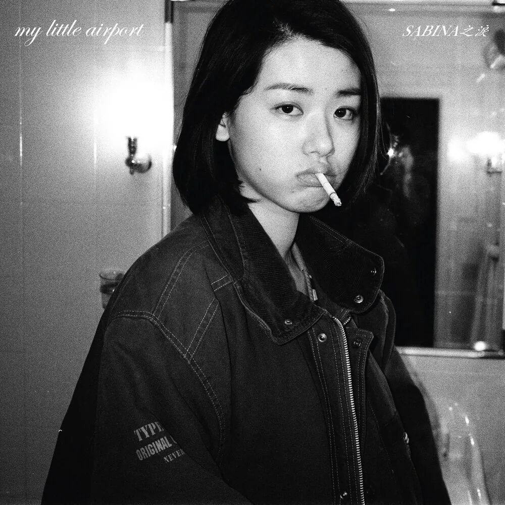

每次你走的時分
D
Archive · 随笔
愛就似條河水般支分 不由得流向他人 這種抽離和這種痴心 一秒即永恆 每次你走的時分——my little airport
愛就似條河水般支分
不由得流向他人
這種抽離和這種痴心
一秒即永恆

每次你走的時分——my little airport
抛除政治色彩，我还是认可这是个可爱的组合。他们的歌词传递出来的情感真诚，基于生活与成长的叙事是他们的特色。他们十分具体的描述生活场景和感受，绝不使人落入脱离实际的空想，这样生活化的气息给我带来安慰。 主唱Nicole唱在動物園散步才是正經事，无比的青春可爱。 失落沮喪歌里唱 我又有心事，自從看了太宰治[1]，也莫名的感同身受。 08年发行的《為你含情》的确很大胆猛烈。有首畢業變成失業，正是毕业生所面临的状况。 甚至他们唱 讓我喝一杯會吐血的香檳[2]、來到世上的意義是為了抗衡[3]也同样轻叩了我发癫的精神状态。 然后现在，我也只想回到我的山洞裡，再也不想隨便相信人類[4]。一旦清醒看见了洞穴以外，就难以接受曾是山洞里的人，难以承受清醒带来的痛苦。